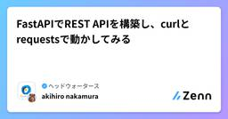
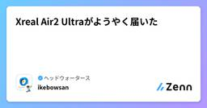
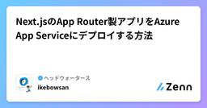
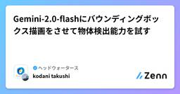
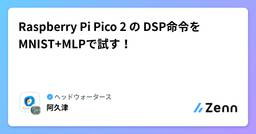
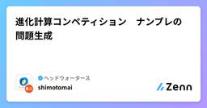

ヘッドウォータースのフィード
https://zenn.dev/p/headwaters
株式会社ヘッドウォータースのテックブログです。 生成AI、LLM、Azureのサービスや資格、IoT、XR系などData&AIとApp modernizeに関して幅広く投稿します！
フィード

FastAPIでREST APIを構築し、curlとrequestsで動かしてみる
ヘッドウォータースのフィード
やることREST APIの概念を理解し、動かしてみる REST APIとは？RESTの原則に従って、設計・実装されたAPIのことです。RESTは以下6つを組み合わせたアーキテクチャスタイルのことを指します[1]。・クライアント/サーバ・ステートレスサーバ・キャッシュ・統一インターフェース・階層化システム・コードオンデマンドREST APIは上記の特徴からシンプルで使いやすい設計が求められるシステムやサービスで広く利用されており、特に柔軟性や拡張性に優れているため、マイクロサービスやWebアプリケーションにおける標準的なAPI設計手法となっています。 REST...
2日前

Xreal Air2 Ultraがようやく届いた
ヘッドウォータースのフィード
2024年3月に発売されたこのARデバイス。発売前に予約してたのですが、納期の遅延が続いて10月にようやく届きましたので紹介します。 仕様Android OS6DoF対応（ヘッドトラッキング・ハンドトラッキング）内蔵オーディオ（グラスの縁）接続端子はUSB TYPE-COpenXR 非対応撮影機能はなし（ただしスクリーンショットなら可能）重さは83グラム（普通のサングラスと同じくらい）公式サイトはこちらhttps://developer.xreal.com/ディスプレイの出力だけだったらほとんどの端末に対応しています。Switchとかプレステにも対応し...
4日前
【Azure】-VoiceRAGのサンプルアプリを動かし方
ヘッドウォータースのフィード
執筆日2024/12/16 やることGPT-4o-Real-timeAudioを使ったVoiceRAGサンプルアプリをMicrosoftがGithubで公開をしています。そのアプリを使ってVoiceRAGを勉強しよと思ったのですが、立ち上げに苦労したので共有です。だれかの役に立てばなと。https://github.com/Azure-Samples/aisearch-openai-rag-audio ざっくり手順インフラ（Azure）の準備アプリを立ち上る 引っかかった点indexのセマンティック構成の名前をdefaultにするapp/backend...
4日前

Next.jsのApp Router製アプリをAzure App Serviceにデプロイする方法
ヘッドウォータースのフィード
App Router（React Server Component）を使ってるとStatic Web Appsを使うことができません。...と言いたかったのですが、現在プレビュー状態ではあるものの実現できるようです。https://learn.microsoft.com/ja-jp/azure/static-web-apps/deploy-nextjs-hybridとはいえApp Serviceを使うのが間違いないので、デプロイ方法を紹介。 デプロイするやつ5ヶ月前にGenerative UIを組み込んだチャットアプリを作ってて、React Server Componentを...
5日前

Gemini-2.0-flashにバウンディングボックス描画をさせて物体検出能力を試す
ヘッドウォータースのフィード
執筆日2024/12/14 概要12/11にGoogleのバージョンアップしたgemini-2.0が登場しました。https://blog.google/intl/ja-jp/company-news/technology/google-gemini-ai-update-december-2024/その中で特に興味を引いたのが画像のバウンディングボックス検出がかなり精度よくできてしまうのが話題になっていたことです(僕が知らなかっただけでgemini-1.5-proの頃からできていたようですが)。これができるとそのまま使うもよし、蒸留学習用のアノテーションデータの大量生成な...
6日前

Raspberry Pi Pico 2 の DSP命令をMNIST+MLPで試す！
ヘッドウォータースのフィード
公式のExamplesにDSPのサンプルが無かったので試してみました！結論としては、DSPを使うとq1.15の積和演算能力が約5倍になっていることが確認できました！比較結果表はこちらです。最初はPico(無印)との全体的なスペック比較について記載してます。本題はDSP命令を試すからです。 Raspberry Pi Pico 2 vs Raspberry Pi Picoそもそも2は何が違うのか？というところからです。公式資料だと以下のように比較されています。基本スペック向上に加えて、ARM TrustZoneやRISV-V対応など色々と追加されています。Dattashee...
6日前

進化計算コンペティション ナンプレの問題生成
ヘッドウォータースのフィード
こんにちは今回は私が運営として参加している進化計算コンペティションについて紹介します。https://www.headwaters.co.jp/news/competitions_eccomp2024_support_hws.html 進化計算コンペティションとは？進化計算コンペティションは、最適化のコンペティションです。2017年進化計算学会の実世界ベンチマーク問題分科会から始まりました。現在も毎年進化計算シンポジウムというイベントと一緒に行われていますが、問題を解くためには必ずしも進化計算アルゴリズムを使う必要はありません。毎年、様々なテーマを取り上げ、大学関係者・企...
8日前

複雑怪奇なDataverseのエンティティセット名の謎に迫る
ヘッドウォータースのフィード
はじめにみなさん、Dataverse使っていますか？私は使っていません！ただ、たまに開発することがあり、そこで盛大に引っ掛かったので共有します。 DataverseとはDataverseは、Microsoft Power Platform上で利用できるデータ管理基盤の一つです。Power Apps、Power Automate、Power BIなどから容易にアクセスできるため、Power Appsをメインで使用する場合はこちらを使うことになるかと思います。外部からAPIでアクセスすることもでき、結構便利に使う事が出来ます。（Entra IDなどでアプリ登録する必要が...
8日前
Python3.13におけるGILオプション化に伴うマルチスレッド、マルチプロセスの使い分け
ヘッドウォータースのフィード
やることGIL除去とマルチスレッド、マルチプロセスの性能を検証する 背景前回書いたこちらの記事の続きです。https://zenn.dev/headwaters/articles/c0e54e9ccf55eeこの記事を書いた時点では知らなかったんですが、Python3.13からGILを無効か有効か選べるようになったんですね。というわけで、マルチスレッド、マルチプロセスとの使い分けはどうなるのかという観点で検証したいと思います。 GILとは？Global Interpreter Lockと呼ばれている「複数のスレッドが同時にPythonコードを実行することを防ぐ」機能...
9日前
OpenAIのCLIPによる画像埋め込みベクトル生成で画像類似度を求めてみる
ヘッドウォータースのフィード
執筆日2024/12/10 概要今回はOpenAIが公開している画像とテキストのマルチモーダル埋め込みモデルCLIP(Contrastive Language-Image Pre-Training) を使って画像同士の類似度評価を行います。最近テキストの埋め込みだと同じくOpenAI社のtext-embedding-3-large(small)を使う機会が多いのですが、マルチモーダル埋め込みベクトルを生成できるCLIPであれば画像からデータの検索もできるためその使い方と性能を軽く調べてみました。https://github.com/openai/CLIP! READ...
9日前
【Microsoft】TinyTroupeでAIエージェントと遊ぶ
ヘッドウォータースのフィード
執筆日2024/12/10 やること話題のAIエージェント。MicrosoftからTinyTroupeが出ました。TinyTroupeの詳細は以下の記事を参考にしてください。すごく勉強になります。https://zenn.dev/chips0711/articles/c03c5057916c5bTinyTroupeで遊んでみようかなと。 前提Azure OpenAIをデプロイ済みであることStructured outputsができるモデルをデプロイ済みであることgpt-4o-mini-2024-07-18 and latergpt-4o-2024-08...
10日前
【Azure Kubernetes Service】- Prometheusとは？
ヘッドウォータースのフィード
執筆日2024/12/09 やることAKSの監視をどうしようか悩んでおり、生成AIに聞いてみました。PrometheusとGrafanaが良いとのことでした。聞いたことはあるけど何ができるのかわからないので、学習したことをまとめます。 Prometheusとは？Prometheusは、オープンソースの監視およびアラートソリューションであり、インフラストラクチャとワークロードのパフォーマンスを監視し、アラートを発するために使用されます。https://prometheus.io/ Application Insightsとの違いは？どちらも監視ツールですが、それぞ...
10日前
Azure CLIでDockerイメージをACRにPushし、デプロイ済みのAzure Functionsにのせる方法
ヘッドウォータースのフィード
やることAzure Portalにデプロイ済みの関数アプリにDockerイメージを連携する 今回やることのイメージ図 準備それぞれ以下の記事を参考にしてインストールしました。・Azure Functions Core Toolshttps://zenn.dev/headwaters/articles/eea7d6e072e9be・Azure CLIhttps://learn.microsoft.com/ja-jp/cli/azure/install-azure-cli 前提・Azure上に以下を作成済み ‐ Azure Functions - Azur...
13日前
マルチスレッドとマルチプロセスの違いを理解する
ヘッドウォータースのフィード
やることプログラムの並列処理について理解する 前提プログラムの並列処理にはマルチスレッドとマルチプロセスの2種類あります。マルチスレッドは同じプロセス内で動作し、同じメモリ空間を共有するため、スレッド間でのデータ共有を効率的に行うことができます。一方、マルチプロセスはプロセスごとに独立したメモリ空間を持ち、プロセス間通信を行うことができます。 サンタさんに例えてみる抽象的な説明だとよくわからないので、サンタクロースがトナカイと一緒にプレゼントを配る例で考えてみましょう。その場合、トナカイがスレッド、サンタがプレゼントを配るタスクがプロセス、そりがメモリ空間、プレゼントが...
16日前
Raspberry Pi Picoの開発環境がいい感じになってる！
ヘッドウォータースのフィード
いつの間にか、VSCode extensionを入れるだけで環境構築ができるようになっていました！特にWindowsについては No dependencies needed とあり、本当にこのextensionのみで環境構築が可能です。（手元のWindows環境でも確認できました！）Linuxについては、以下の依存を事前インストールする必要があります。sudo apt install python3 git tar build-essential環境構築後はGUIをポチポチするだけでプロジェクトを作成できました。プロジェクト内の.vcodeフォルダにlaunch.jsonなど...
16日前
Azure AI Content Understanding(プレビュー)を正直レビュー!
ヘッドウォータースのフィード
AI Content Understandingとは11月のMicrosoft Igniteで新しく発表されました！サービスのコンセプトとしては「非構造化データを構造化データに」だそうです。画像・音声ファイル・動画・テキストファイルを解析してユーザーが指定したスキーマに振り分けてくれます。現在はプレビュー版ですので、まだ正式にリリースはされていません。https://learn.microsoft.com/en-us/azure/ai-services/content-understanding/overview 今回検証してみること弊社Data&AIのメンバ...
18日前
Microsoft GraphRAGのグローバル検索/ローカル検索を試す
ヘッドウォータースのフィード
はじめにGraphRAGという従来のRAGシステムが抱える問題を一部解決するRAGがあります。ざっくり概要を言うと、ナレッジグラフからコミュニティと呼ばれる要約のインデックスを作成し、クエリ時にコミュニティ全体でスコアを出してインデックス全体に対する質問に回答できるグローバル検索と、エンティティ周辺の情報情報も加味した回答ができるローカル検索が可能なRAGです。HUNTER×HUNTERについての質問で、グローバル検索とローカル検索の違いをみたいと思います。 デモ環境構築GraphRAGを試すには、Libraryを利用する方法とAcceleratorにより、ほぼ設定ファ...
19日前
【Azure】Azure AI Content Understandingのコンテンツ抽出で遊んでみる
ヘッドウォータースのフィード
執筆日2024/11/30 Azure AI Content UnderstandingMicrosoft Ignite 2024で発表されたサービスです。ドキュメント、画像、動画、音声などのコンテンツをユーザー定義の出力形式に変換します。→マルチモーダルのStructured outputshttps://learn.microsoft.com/en-us/azure/ai-services/content-understanding/overview リソースについて2024/11/30時点では、WestUS、Sweden Central、Australia...
19日前
AIやIoTプロジェクトに最適！注目のRaspberry Pi代替SBC 5選
ヘッドウォータースのフィード
はじめに2024年もシングルボードコンピュータ（SBC）の需要はますます高まっています。特に、Raspberry Piはその手軽さと多用途性から世界中で愛用されていますが、現在ではその代替となる優れたSBCも数多く登場しています。本記事では、Raspberry Piのライバルとして注目される5つのSBCを紹介し、それぞれの特徴や用途を比較していきたいと思います！ Raspberry Piの代替SBC 1. NVIDIA Jetson Nano 概要AIや機械学習向けに設計された高性能なSBCです。128コアのGPUを搭載し、複数のニューラルネットワークを並行して実行す...
19日前
日本語特化の文書画像解析・OCRライブラリ「Yomitoku」を試してみる
ヘッドウォータースのフィード
概要先日Twitterで見かけた日本語特化の文書画像解析・OCR Pythonパッケージが面白そうだったので使ってみました。（商用利用は別途ライセンスを申請する必要があるためご注意ください）https://x.com/KINOCOAI/status/1861386062175838303https://github.com/kotaro-kinoshita/yomitoku 環境OS: Windows11CPU: Intel Core i7-1265UGPU: なしメモリ: 16 GB インストールと実行インストールとテスト実行が2stepで完了するのであ...
20日前